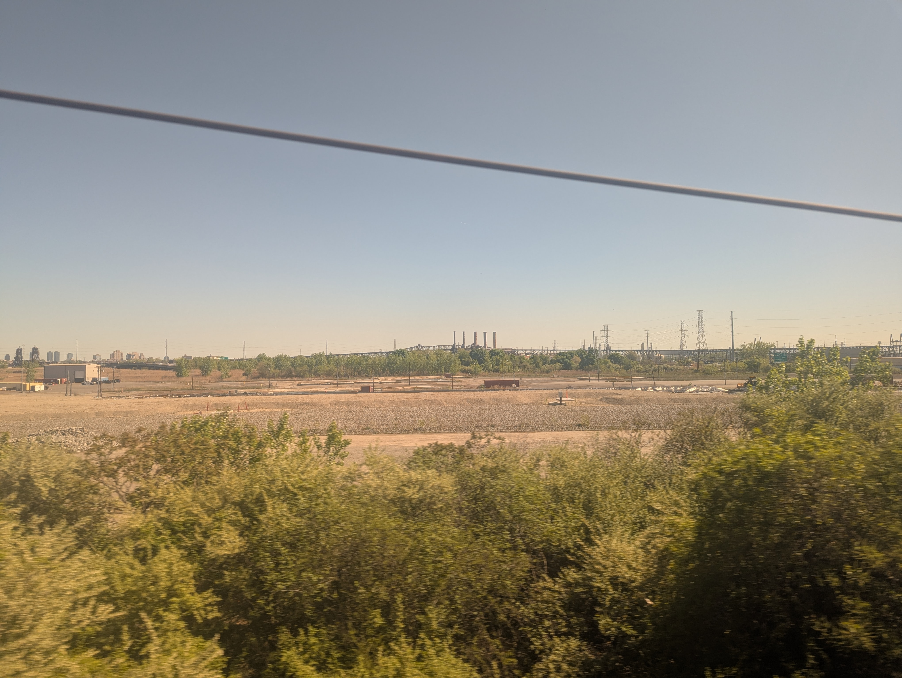
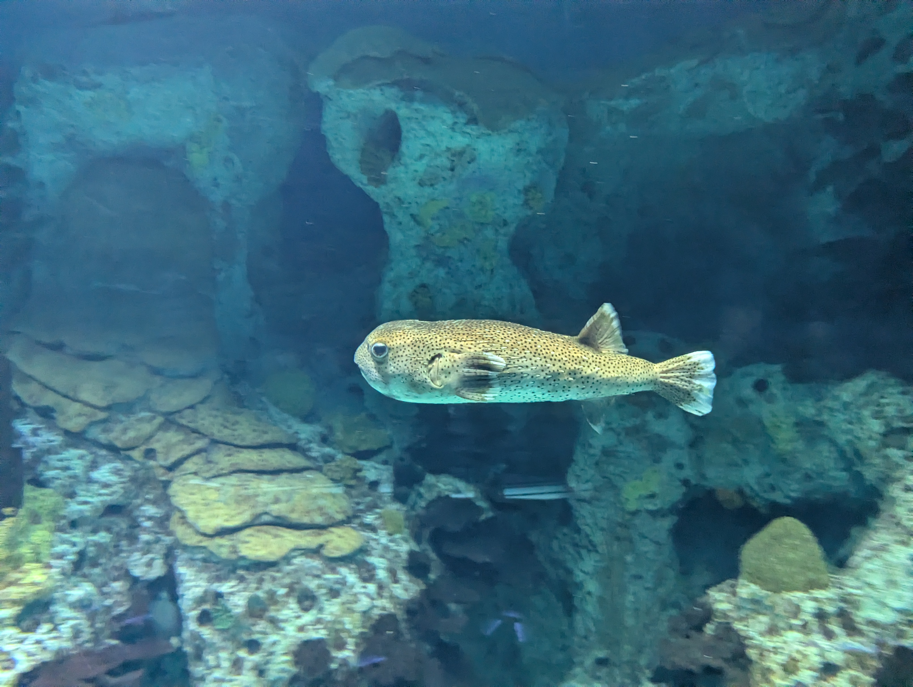
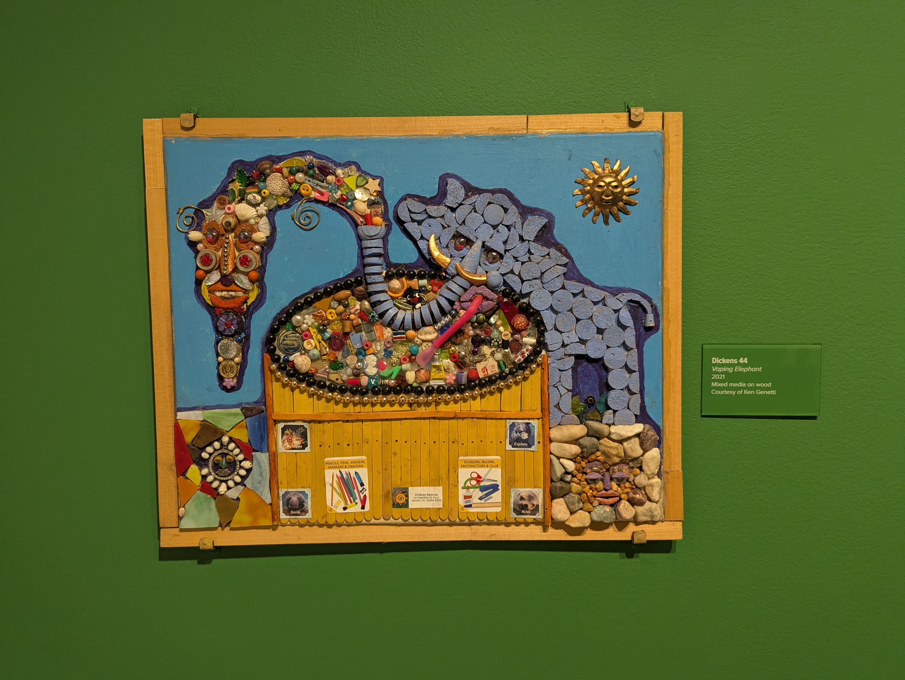
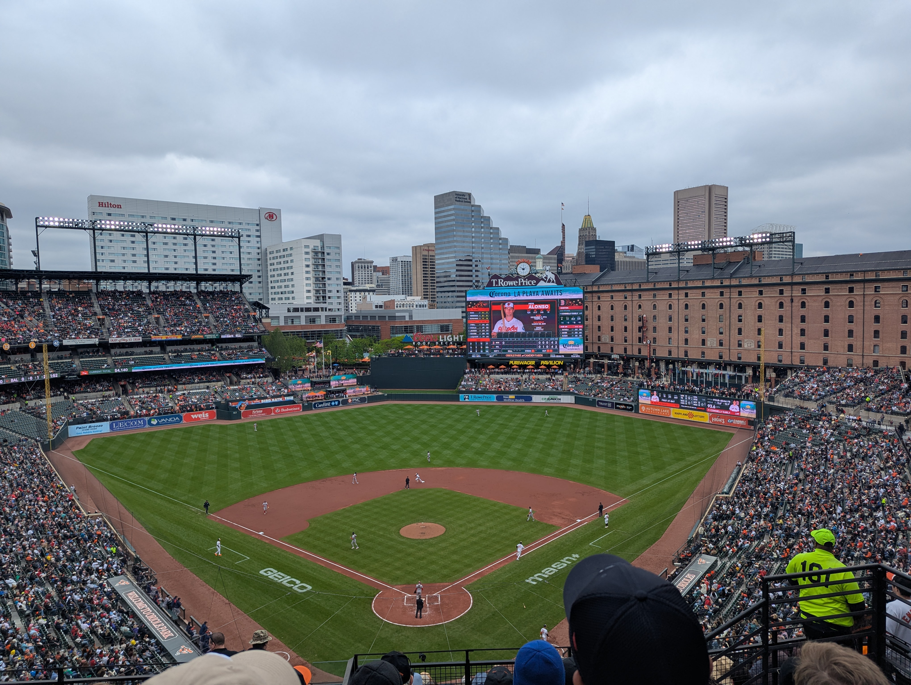
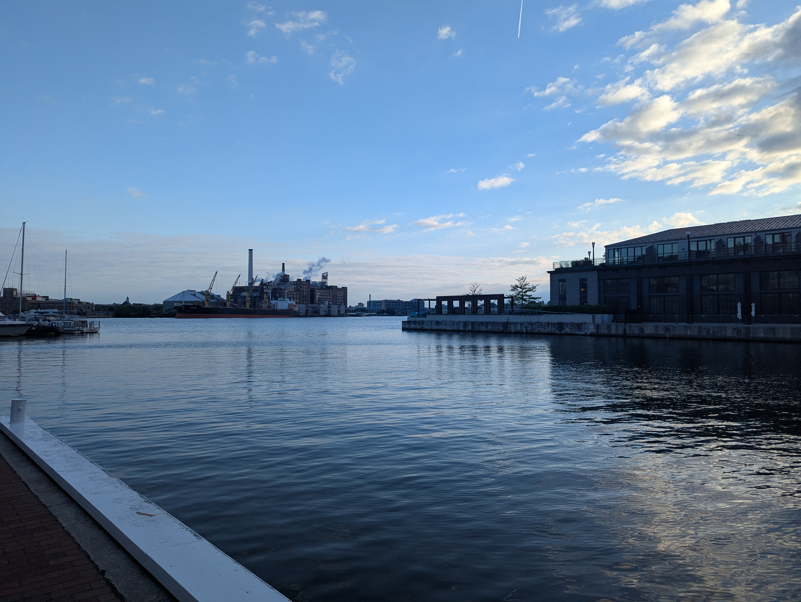

Hey guys, thanks for reading the funny moments blog section. Sort of one of the less consistently maintained parts of the site, but, I think, a really critical one for the mission we have.
Following on from the success of the 2025 Patrick Joseph DeFrancisci northeastern jaunt, we wanted to press on the momentum there with a 2026 initiative that had been in the works for some time: The Summer Of Cities.
The jist / gist of the SOS is pretty simple: amtrak is pretty cheap, so it would be a fun 3 day weekend for basically anyone I could talk into coming with me for a given city. As the project has matured, there's been a number of additional little things which help, among them:
+ a bunch of my friends are baseball fans, and baseball fans often make it a goal to see every MLB ballpark
+ Me and my friends live in capital of america, earth, and the universe, new york city, which holds Penn Station, a central point for getting to basically the entire northeast corridor
+ it's cheap, which I'll break down next
+ As I start to quickly mount spiraling iterations of burnout with my commute / job, it's good to scout places where I could move and do pretty much whatever to get by and live pretty happily
So, for these reasons, me and my close college friends michael and ricky took the northeast regional to Baltimore. The total cost came to be maybe $400 a head? 250 ish for the hotel, (2 nights, mike and I split it) $100 for the amtrak, and, $50 for tickets to the O's game.
An important factor is that I blew a bunch of money on snacks and dumb bullshit I have already forgotten about. This is pretty much the goal of the excercise so I'm not going to bother looking at how much I spent there.
The amtrak northeast regional is pretty much the perfect tool for this and the fact it's so good is really the only reason why the SoS is even possible. I won't bother comparing driving, flying, and taking the train. We showed up at NY Penn about 1.5 hours before the train, me and my friends grabbed a four seater, and we were off the train in 2 hours, light $50 for that leg of the trip. I'm hesitant to give myself less than 3 hours to get through JFK, to then be treated to fart tik toks for an hour while I wait to board my plane.
I will say the good thing about flying is it gets you out of new york without being exposed to new jersey. I don't hold a local history degree or anything, but it's my understanding that the state holds, in the tri state political environment, the same role as the neighboring city to your simcity city. Back in the day, a crisis emerged when a shipment of flue ash out of Philadelphia was unable to find a home after being contracted out to a local company for disposal, they figured they could just dump it in new jersey.

And they were right to assume so, it seems. The countryside is populated with many, many, many cranes. Which, presumably are there to carry around the output of large basins of concrete and steel, containing god knows what. Going south through the northeast regional, this is most of what you do as you go through Seacaucus, Trenton, Wilmington, Philadelphia's Kensington neighborhood, later, you're treated to nothing at all, but you go over some nice bridges as you get out to Havre de Grace.
Once we had actually arrived in Bmore, the first thing we were told about where we were staying was that it was a big hub for strip clubs. I guess being 3 20 something men, we are technically in the target demo for strip clubs, but I don't necessarily see the appeal. None of us really seemed to seriously consider going. So me and my friends didn't all go hang out to get boners together, before going home without having sex, because doing so would be illegal. The point of the excercise is to have women kind of rub on you, but you don't cum. Not that it's illegal to cum, you're just definitely not supposed to.
Say you go to a strip club and you get a lapdance and you bust. That's probably not illegal. You go back the next day and you cum again, I don't know what happens at that point.
Anyway, rather than going and getting big turgid boners, my friends and I went to the aquarium. Baltimore's aquaium is the "national" aquarium, which I take to mean it's presumably held in some kind of higher esteem although I doubt there's an enforced hierarchy there. If there were one, it'd be easy to make a case for baltimore though. The aquarium is clearly very high end, designed like an assembly line to ensure you observe as many fish as possible before you go home.
That being said, there really were some incredible creatures which I took care to remember, such as...
the tassled wobblegong
the cool pufferfish

the big manta ray
I don't have a picture of this one
It was $50. I remember jokingly saying that gods creatures are more beautiful than any work of art by man but that kind of turned out to be true.
No dissing the art we saw though, as we did also go to the American Visionary Art Museum. The AVAM contains a lot of what you could call "folk art". I know for a fact that people would scoff at some of what was on display there, since people seem to fawn over "hyperrealistic" paintings of a horse or a big eyeball. But I felt that the art in the AVAM was consistently able to produce a meaningful effect on me as a viewer, which is a declaration of victory I guess.

My favorite pieces there were a series of embroidered... quilts? which detailed a young woman's survival of the nazi holocaust. I read some curator's notes about how they sought to juxtapose the suffering of victims with the hope of a beautiful singular human family, but most of the other pieces were matter of fact retellings of murders, kidnappings, and seeing someone get eaten by dogs.
Something I should mention in passing, and maybe cut entirely on later edits, is that I am completely exhausted as I go through this trip. I've been working and commuting 12 hour days at Goldman Sachs for about a year now, and it's permanently worn into my face in the form of massive black bags that now run nearly past my cheeks. It makes me pretty sad. It's fun to walk around and say "one time I was an associate at Goldman Sachs"! But I know I've never quite said I'm someone proud of or satisfied with my appearance, I wonder if with this I am watching that ship sail forever.
I pretty regularly took 2 hour naps into sudden full REM sleep, and this includes a pretty good effort I made at doing so while at Camden Yards, home of the Baltimore Orioles. The experience of walkinng over to the stadium is fantastic. You just walk over. There's also a light rail line, and a series of buses that mostly just got stuck in traffic.

The hat selection at the stadium was kind of a miss. I love a good baseball cap, but the fit is as important as the appearance to me. Mesh "trucker" stuff is out of the question, flat brim, "snapback" hats don't work either. In particular, I like a kind of shallow hat. Something worn too high up to really help block the sun at all.
In my experience, the best thing a baseball game can be is a complete mess. I'm a phillistine, the pitcher / batter faceoff means nothing to me. But guys fucking up in the infield? Missing throws to each other and urgently needing to triage who's important, what's the right thing to do? That's as engaging as sport can be for me personally. The O's game had a lot of that. A guy caught the ball, then fell over and dropped it. The catcher could not throw out a stealing batter for his life and the Red Sox knew it. It was awesome. It literally says in the song that you root root root for the home team if they don't win it's a shame. So, I did not root against the O's. That being said it was a very fun loss to watch.
So, as I mentioned earlier, one of the threads in my life is I would probably like to move somewhere cheaper. At time of writing, I work for Goldman Sachs and live with my parents on Long Island, which gives me the very unique opportunity to do one of the classic annoying guy things: cheat the system to buy a house very early on in life. I can't even get into what I would do if I owned a house, because I don't actually know, but I can tell you that Fell's Point (fellas point lol) is absolutely fucking gorgeous. Multiple coffeeshops with people on laptops, a beautiful waterfront cafe. Somehow, there's 750 sqft rowhouses available for 199k in this area. Probably because people complain about the parking or some shit. As I daydream about ditching new york to work part time or in some new field, gonna have to keep this place in mind...

Another thing in Fells Point is an independent movie theatre! Although maybe that speaks too much ofit. It kind of just felt like an AMC without the branding. We sat in nice leather motorized recliners and ate pretty expensive snacks. The movie in question was 2026's "Michael".
Michael Jackson, along with Richard Nixon, is for me one of the most fascinating people of that entire century. A fundamentally broken person, just a complete alien who is only able to sometimes give outputs correct enough for them, for this whole thing they are to work at all. Not that it's really their fault. I get the inkling that as you get older, you just accept the ways in which you can and can't actually communicate or relate to people. Having done this, the next thing you do is find a way to get comfortable in that cage.
For Michael Jackson, that seemed to manifest in the form of taking on unhealthy relationships with animals and children, asking too much of them, for the only creatures able to be normal about him to be adult human beings, which they could never be.
Was Michael Jackson a child abuser? Well, Jordan Chandler, at the time, was interviewed, on the record, and said that while he slept with Jackson in his bed, nothing ever happened. Unfortunately, the guy interviewing him was Anthony Pellicano, notorious hollywood "fixer".
Pellicano, himself a convicted felon, would later fire Jackson as a client, he's never disclosed why.
Anyway, the crowd at the theatre sucked! Someone came in, probably 75 minutes in, and began just explaining who Michael Jackson was to someone else. That's what the movie is about!
Finally, we wrapped up on Monday morning with a trip to Eikiben, a restaraunt recommended to Mike by a coworker. The restaraunt are bao buns with fried chicken. Like, there is fried chicken in the bao buns? no. There are buns on the top, and the bottom, and there is fried chicken in between these top and bottom segments. Is there anything inside of the bao buns? Also no. The buns are just normal steamed buns like you'd get anywhere, except in this case they are the buns for fried chicken. It was really really really really good.
I feel kind of guilty not mentioning my friends that I went with more, but really, a lot of the fun is that going with them, a lot of my perspective comes from interacting with their perspective. I didn't understand my friends characterization of the restaraunt I mentioned, for instance.
Overall, the trip was a massive success. Absolutely no hitches at all, not late to work on Tuesday, I'm on a four day week, I slept like a log, it was great. I could even tough it out another year at GS and buy a place in Bmore, but I should at least try to make new york work first. Later!